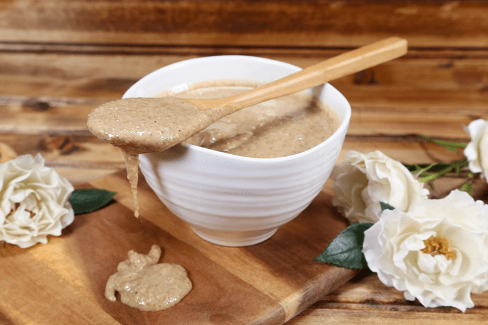
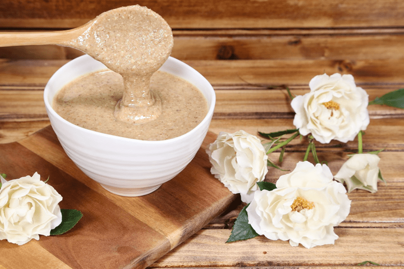

Walnut Cashew Butter
If you’re one of those eat-peanut-butter-straight-out-of-the-jar types of people (like my husband), get your spoon out and ready yourself for this recipe. For those of you who wish to reap the health-benefit-rewards of eating walnuts raw, this raw butter will create a flavor that tastes just like a… shelled walnut. For those who choose to use roasted walnuts, the butter will take on a sweeter, nuttier flavor.

You might have noticed that I snuck in some cashews into this recipe. Why did I add cashews to the walnut butter? Cashews were used as a natural additive to make the butter more creamy and spreadable. Cashews also add a hint of natural sweetness.
Health Benefits in a Nutshell
I guess it really ought to be, health benefits within the nutshell! Walnuts are a delicious and nutritious source of Omega-3 essential fatty acids, which the body cannot manufacture. They contain a host of B vitamins; B1, B2, B3, B5, B6, and folic acid. And we can’t forget that they provide a wealth of minerals, such as iron, magnesium, potassium, and zinc.
Keep the faith…
As you begin the process the walnuts nuts will go from mealy to powdery, to clumpy, to a large ball of dough, it might even appear to have seized up. Most people stop here thinking they failed… keep going!
Eventually, it loosens into the vicious goodness we all know and love in a nut butter! It’s good to know too that certain nuts and seeds take longer than others, so never compare one nut butter experience to another. With my machine, it took 10 minutes to create 2 cups of walnut butter. I use the Breville Sous Chef Food Processor, which I absolutely love. It’s a 16 cup processor with 1200 watts of peak power. Which has the same horsepower as my Vitamix Pro.

You can use a high-power blender for this job, but frankly, I find it much less “work” in my food processor. I find that having a wider base in the food processor bowl prevents me from having to slave over the blender where I have to really work to keep the nuts moving.
 Ingredients:
Ingredients:
Yields 2 cups
Preparation:
- Make sure that you followed the process of soaking and dehydrating the walnuts and cashews. DO NOT use wet nuts for this; it won’t work.
- Place the nuts, sweetener, and salt in the food processor, fitted with the “S” blade.
- Stop the machine periodically to scrape down the sides of the bowl, just to keep everything blending evenly.
- Every machine works differently, so the processing time will always vary. It depends on the strength and size of your food processor and how many nuts you are processing.
- With my Breville Sous Chef Food Processor, it only took 4 minutes to have the perfect consistency for our tasting.
- Be patient. Remember, the nuts will go from mealy to powdery, to clumpy, to a large ball of dough, before it hits that velvety stage, so be patient.
- The reason for processing nut butters so long is to make sure that enough of the nuts, natural oils are released. The natural oils will emulsify with the sweetener that you use.
- No matter how tempting it is, NEVER add water to your nut butter, it will produce a pasty, gritty result and it will spoil quicker.
- I store my butters in the fridge to extend the shelf life and to avoid the nuts from going rancid.
- When stored in the fridge the butters will become much thicker. If you have the time, you can allow it to warm to room temp to help soften it.
- Store excess butter in the freezer. Pour the butter into candy molds or ice-cube trays. After they are frozen, remove and store in an airtight, freezer-safe container for approximately 4 months. Enjoy right out of the freezer for a mid-afternoon snack.
- Like pecan butter, this soft, oily butter is ready in minutes. It, too, can have a bitter aftertaste from the skins, making it good for recipes. Walnut halves are expensive, so look for pieces.
© AmieSue.com